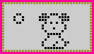

NANO KITTY AND PUPPY INSTRUCTIONS
The object of the game is to take
care of your Nano Kitty/Puppy just like you would a real pet. If
you take good care of your Nano Kitty/Puppy, it will grow up
happy. If you neglect your Nano Kitty/Puppy, it will run away
from home. The game takes approximately one month to play
successfully.
| CONTROLS  = Cancel/Mode (circle button) = Cancel/Mode (circle button)
= Left Cursor
(left arrow button)
= Right
Cursor (right arrow button)
= Confirm
(square button)
There are two
different modes for your Nano Kitty/Puppy : Timer Mode
and Game Mode.
Remove the
Activation Tab by pulling it straight out. Your Nano
Kitty/Puppy should now be activated.
|
 |
SET
THE TIMER
- Press to
enter Time Mode.
- Press and
hold until the numbers begin to blink.
- Press to
advance the hour.
- Press to
advance the minutes.
- Press to
enter the time and start the Timer.
- Press to
go back to Game Mode.
|
 |
After you set the current
time on your Nano Kitty/Puppy, sit back and watch the wonders of
binary birth. Be patient, this takes a few minutes.
SOUND
ON/OFF
- Press to enter
Time Mode.
- Press to turn sound
off (bell on display disappears).
- Press to turn sound
on (bell on display appears).
- Press to go back
to Game Mode.
KITTY/PUPPY'S HEALTH
In order to take good care
of your Nano Kitty/Puppy, you must know what it needs.
To check the Kitty/Puppy's
health:
- Press or to select the
Health icon on the screen.
- Press button to confirm
your selection.
- Scroll through the
Health section using buttons or .
| You
can check the following : Empty hearts indicate a low
score and full hearts indicate a high score.
(NOTE: always check
the Health Icon when your Nano Kitty/Puppy cries).
|
|
FEEDING
TIME
All Kitties/Puppies work up
an appetite, so you'll want to feed your newborn Nano Kitty/Puppy
right away.
To feed your
Kitty/Puppy:
- Press or to
select the feeding icon on the screen.
- Press to
confirm your selection.
- Press or to
select the proper food.
- Press
again to feed your Nano Kitty/Puppy.
|
|
(NOTE: Too many snacks are
not good for your Nano Kitty/Puppy).
CLEANING
TIME
| When your Nano
Kitty/Puppy makes a mess, you have to clean it up -
yuka-puk! |
|
If
you see some stinky digital droppings on your screen or
tiny little paw prints, then it's time to clean your Nano
Kitty/Puppy.
- Press or to
select the cleaning icon on the screen.
- Press to
clean your Nano Kitty/Puppy.
Repeat as
necessary.
|
|
PLAY TIME FOR NANO KITTY
Playing with your Nano
Kitty is very important. There are two games you can play with
your Nano Kitty.
| Game 1 is
peek-a-boo. Game
2 is chasing the mouse.
|
|
- Press or to select the
game icon on the screen.
- Press to confirm
your selection.
- Press or to select
Game 1 or Game 2.
- Press to start the
game.
(GAME 1)
You must guess which way
your kitty will look. If you think your kitty will look to the
left then press button . If you think your kitty will look to the right then
press button .
Every time you guess correctly you make your kitty happy, Guess
wrong though, and your kitty becomes sad.
(GAME 2)
You must help your kitty
catch the running mouse. At the start of the game a mouse runs
across the screen. You have to help your kitty catch the mouse by
pressing button
to make your kitty run to the left, or button to make your kitty
run to the right. Hurry! You only have a few seconds to help your
kitty catch the slippery mouse. If your kitty gets the mouse in
time, it will be happy, if not it will be sad.
PLAYTIME FOR NANO PUPPY
Playing with your Nano
Puppy is very important. There are two games you can play with
your Nano Puppy.
| Game 1 is shaking
hands. Game
2 is playing ball.
|
 |
- Press or to
select the game icon on the screen.
- Press to
confirm your selection.
- Press or to
select Game 1 or Game 2.
- Press to
start the game.
|
 |
(GAME 1)
You must guess which way
your puppy will shake. If you think your puppy will shake your
left hand then press . If you think your puppy will shake your right hand
then press .
Every item you guess correctly you make your puppy happy, guess
wrong though, and your puppy becomes sad.
(GAME 2)
You must help your puppy
catch a ball. At the start of the game a ball falls from the top
of the screen. If it falls on the left side of the screen you
must press to
send your puppy to the left. If the ball falls on the right of
the screen you must press to send you puppy to the right. Hurry! You only have
a few seconds to catch the ball. If your puppy gets the ball in
time, it will be happy, if not it will be sad.
SLEEP
TIME
Your Nano Kitty/Puppy must
get plenty of rest; so when you see that your Nano Kitty/Puppy is
snoring, turn out the lights.
To turn out the
light:
- Press or to
select the light icon on the screen.
- Press to
confirm your selection.
- Press or to
select either off or on.
- Press
again.
|
|
When your Kitty/Puppy wakes
up don't forget to turn the lights back on.
DISCIPLINE
If your Nano Kitty/Puppy
begins to misbehave then you must discipline your Nano
Kitty/Puppy.
(NOTE: Be sure to check the
Health Icon first!) To teach your Nano Kitty/Puppy to behave, you
must:
- Press or to
select the discipline icon on the screen.
- Press to
confirm your selection.
|
|
MEDICINE
If your Nano Kitty/Puppy
gets sick, (picture of a skull with fumes) you must administer
special medicine right away!
(NOTE: If your Nano
Kitty/Puppy will not play with you or will not eat even though it
is hungry, then your Nano Kitty/Puppy is, indeed, sick.)
- Press or to
select the Medicine icon on the screen.
- Press to
confirm your selection.
|
|
Your Nano Kitty/Puppy's
health will improve after the first dose of medicine and the icon
will change appearance (picture of a clear face with black eyes).
You will need to administer a second treatment 2 hours after the
first in order to ensure good health. If you attempt to give a
second treatment in less than 2 hours from the first, it will
take longer to make your Nano Kitty/Puppy healthy again.
ATTENTION ICON ?!
If the attention icon
appears along with a beep, you need to check on your Nano
Kitty/Puppy.
SUCCESS
Be a good pet owner and
take very good care of your Nano Kitty/Puppy and it will grown
big and strong and live a long life. If you neglect your Nano
Kitty/Puppy, it will run away from home.
TO START A NEW NANO KITTY/PUPPY,
SIMPLY:
Press buttons and at the same time.
NOTE: Pressing these two
buttons will cause the game to reset.
BATTERY REGULATION:
Do not mix old and new
batteries. Do not mix alkaline, standard (carbon-zinc), or
rechargeable (nickel-cadmium) batteries.
page last updated 25
August 1997